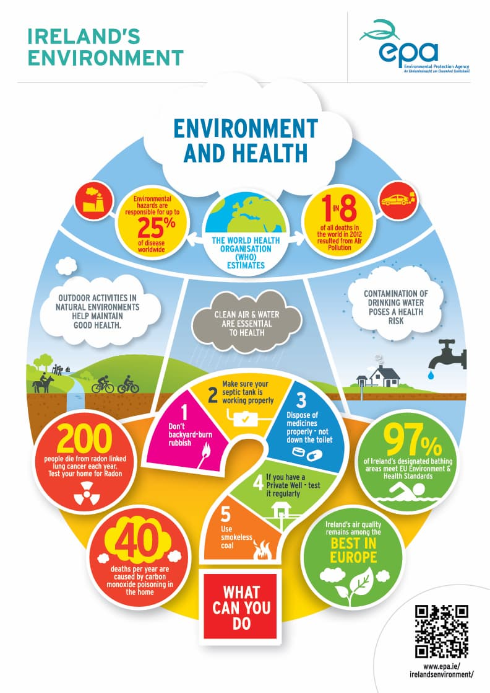
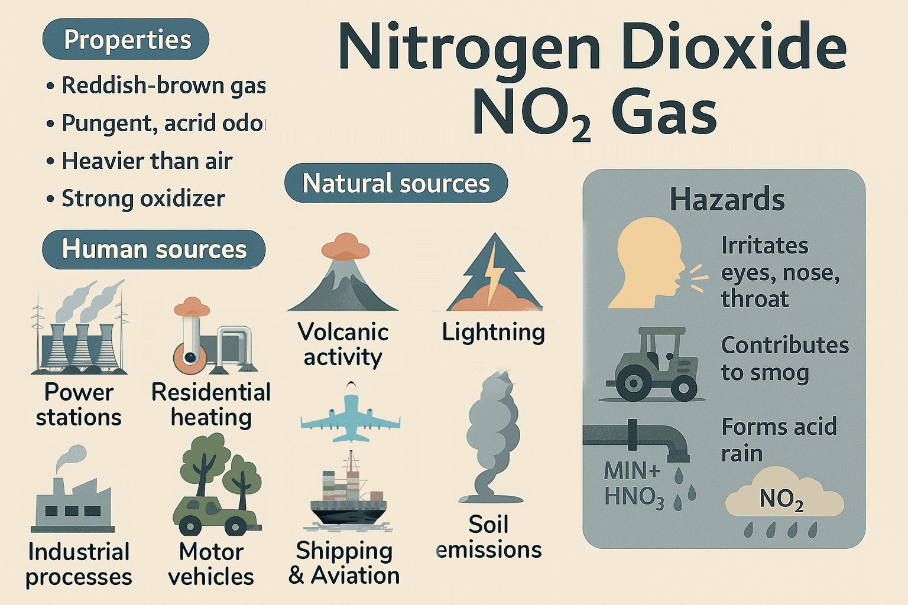

What is air quality and how is it measured (PM2.5, PM10, NO2, NOx)
Air quality measures how clean or polluted the air is around us, evaluated using key indicators including PM2.5, PM10, and NO2.
Particulate matter (PM10 and PM2.5)

Image Source: EPA infographic
PM are particles in the air typically measured as PM10 and PM2.5 with diameters of 10μm (microns) or 2.5μm. In Ireland, the main sources are solid fuel burning and vehicular traffic. Other sources are soil and road surfaces, construction works and industrial emissions or natural sources such as windblown salt, plant spores and pollens. These direct emissions are known as primary PM. Particulate matter can be formed from reactions between different pollutant gases (secondary sources). Small particles can penetrate the lungs and cause damage. There are high levels of PM10 in many cities and towns.
Nitrogen dioxide (NO2) and Nitrogen oxides (NOx)

Image Source: Sources of Nitrogen Dioxide Emissions
Emissions from traffic are the main source of nitrogen oxides in Ireland along with electricity generating stations and industry. Nitrogen dioxide can affect the throat and lung. The main effects are emphysema and cellular damage. It impacts visually as it has a brown colour and gives rise to a brown haze. Oxides of nitrogen contribute to the formation of acid rain and of ozone. Levels in Ireland are moderate but are increasing due to growth in traffic numbers.